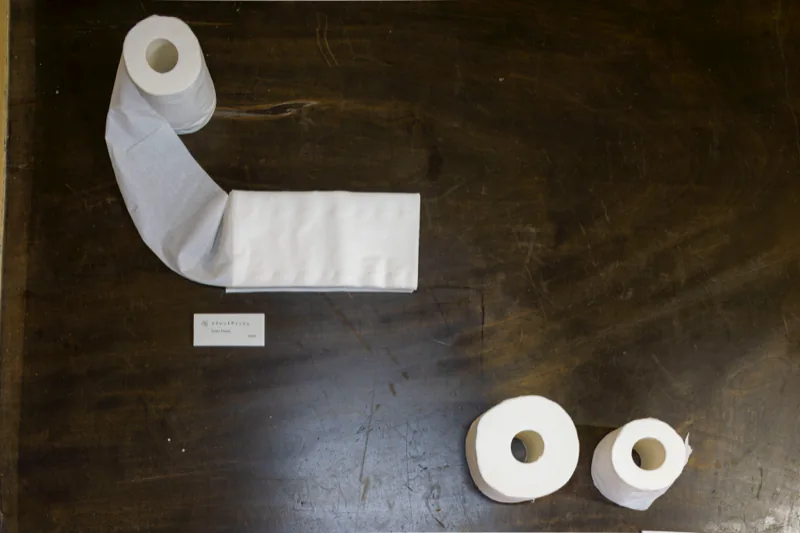

渡辺英司の作品Works by Eiji Watanabe (artist)
休憩棟Rest Building
休憩棟の座敷と窓辺に24点。番号と制作年はカタログの展示作品リストに従う。作家自身のコメントは最初の一、二文だけを引き、長いものは要旨にした。全文はカタログの展示作品リスト（p.73–78）に収録。
- ①ＣＯＭＥCOME2012
アルミ建材の切り口をアルファベットに見立て、C O M E と読めるようにした。
- ②星くず Star DustStar Dust1998
鉄材を高速カッターで切り、飛び散る火花を黒いゴミ袋に直接受けた。袋には火花の塵で、銀河のような無数の穴が空いた。
- ③空の夢 メモ（ドローイング）Dream of the Sky / note (drawing)2000
20年近く前に、大きな味噌樽のような樽の中を上から見下ろす夢を見た。まぶしい光の中を無数の飛行機が飛び、自分は飛行機より高い場所にいた。
- ④

④ 空の夢 / 空の上 樽の夢のメモを20年後に見つけ、鮮明に覚えていたイメージを復元してみた。空の上にいた。
- ⑤紙飛行機Paper Planes2016
新聞の一面に、Hollywood の看板を背景に飛ぶ飛行機の写真を見つけた。タイトルを付けるだけで作品にできないか、数時間考えて思いついた。「できた！ タイトルは、紙飛行機!!」
- ⑥

⑥ エデンの海 オランダの友人ポール・フーデが、魚とカエルの図鑑を送ってくれた。28年前に魚を試してうまくいかないと思っていたが、せっかくなので試してみた。好みを裏切ることができた。
- ⑦出航Sailing1997
粗大ゴミに捨てられた学研の百科事典＜産業＞に、タンカーが出航するまでの写真があった。そこで百科事典からも船を「出航」させた。積荷は、言葉！
- ⑧問いの部屋Room of Questions2004
英語学習のためのなぞなぞ集が、哲学的な問いに思われた。答えを見せない、問いのみの言葉のボードを作った。読んだ人は答えをずっと考え続け、哲学者になる。
- ⑨紙粘土 / トルソーPaper Clay / Torso2006
子供の頃、祖父の家が酒屋で、ビニールに包まれた酒粕を売っていた。何気なく指で押しているうちに、酒粕はビニールの中で粘土になった。
- ⑩再生の再生 / ミニチュアReproduction of Reproduction / miniature1998
恐竜の骨格模型を見つけた。骨ではかわいそうなので、紙粘土や蜜蝋で肉をつけてみた。
- ⑪

⑪ 常緑 / Ever Green 人工芝の芽を成長させようと、ラジオペンチでつかんでゆっくり引き伸ばした。より人工的に、雑草が生えたように自然になった。
- ⑫骰子焼印Dice Branding Irons1994
サイコロの1から6までの目を焼印にした。焼印を押すことと名付けることを同格にしてみたのだ。
- ⑬

⑬ 星の名前 目のくぼみだけの白いサイコロを四角形に敷き並べ、上の表面を黒く塗る。偶然に現れたさいの目が記号となり、まるで星々の名前を見るようだ。
- ⑭話す鏡Talking Mirror2007
2002年、初めてのアーティスト・イン・レジデンスは山口市とエジンバラの2か所で行われた。その記憶が呼んだ鮮明な夢から醒めると、目の前は全面鏡張りのクローゼットだった。デイドリーム「話す鏡」ができた瞬間。
- ⑮

⑮ トイレットティッシュ ／ ⑯ エビングハウス錯視 一つのトイレットペーパーを、二つの違いを持った形の連なりにしてみた。英司 作
- ⑯エビングハウス錯視（トイレットペーパー版）Ebbinghaus Illusion2025
半分使ったものと新品のもの、二つの同じトイレットペーパーの芯の大きさが違って見える錯視物。英治 提示
- ⑰

⑰⑲⑳㉑ 窓辺の展示 卓球で、超スピードのスマッシュを受けたら、貫通した。
- ⑱シルエットモンスターSilhouette Monster2017
夜中に電灯の前で鉄アレイを持って体操をしていたら、斜め前の家に自分の影が大きく投影され、まるでモンスターが家を壊しているようになった。
- ⑲ハンドメイドHandmade2020
鳥取の美術博物館で学芸員が作品を拭いていた。拭き終わった布には、その手跡がしっかり残っていた。ゴミ箱から拾い、いただくことにした。
- ⑳メモリーズMemories2004
本の形にも見えるスポンジの背表紙に「MEMORIES」とペイントした。本を読むように折り曲げると沢山の切り込みが現れ、出来事の記憶を読むことができる。
- ㉑ジェンガJenga2004
ジェンガの箱にプリントされた崩れる瞬間のシーンを、中のジェンガを使って再現。崩れていく瞬間を固定した。
- ㉒S=1/43（ミニカー）S=1/43 (model car)2002
スケールが43分の1の精度のミニカーを事故という出来事にした。事故という出来事もS=1/43になった。
- ㉓絵の中の男の話 / 立体The story of the man in the picture / three-dimensional objects1999
「絵の中の男の話」のショート・ストーリーの挿絵の代わりに、陶器で立体挿絵を作った。
- ㉔

㉔ 変身もんどり庵 スタジオで作った小屋が、鈴木昭男がかつて作った「もんどり庵」と似ていたので移築した。この小屋でカフェやショップ、鈴木昭男＋宮北裕美のサウンド・パフォーマンスとダンスが行われた。


{kind=link}
写真：撮影 青木兼治。作家コメントの全文はカタログの展示リストに収録。